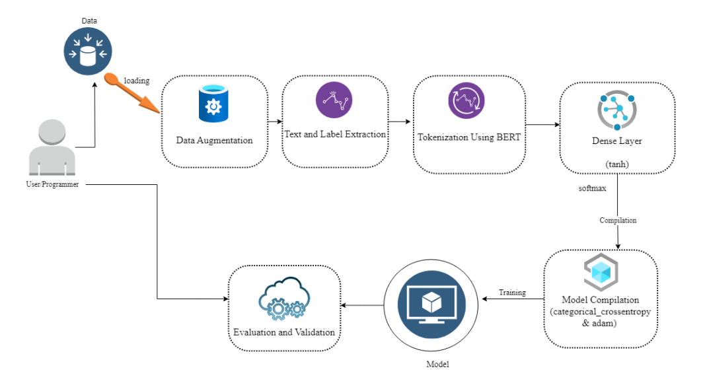

001 :hate-speech-detector-based-on-hybridized-bert-attention-mechanism-and-context-analyzer
This project was done to develope a multiclass hate speech detector by using BERT, the LLM was trained on ethos multiclass hate speech dataset after augmentation using back translation was done.
About Dataset
Hate speech remains a pervasive issue in digital spaces, posing challenges to online safety and inclusive environments. This project addresses this concern by employing advanced Natural Language Processing (NLP) techniques to develop an innovative hate speech detection system.
Objective
The primary goal of this project is to create a robust hate speech detection system capable of identifying harmful content targeting specific social groups based on attributes like race, gender, religion, and sexual orientation.
Methodology
Data Collection and Augmentation
Meticulous data augmentation was conducted, leveraging the deep-translator library for back translation, ensuring a diverse and comprehensive dataset.
Model Architecture
Utilization of BERT (Bidirectional Encoder Representations from Transformers) attention mechanisms and a context analyzer to capture intricate contextual relationships within textual data.
The hate speech detection model comprises two layers with a frozen BERT layer, trained for 20 epochs using the Adam optimizer and softmax for multi-labeled class classification.

Performance Metrics
Total accuracy of 0.99 on the 20th epoch.
Evaluation metrics: Macro Precision of 0.79875, Macro Recall of 0.71587, and Macro F1-score of 0.74825, demonstrating promising performance.
Model Capabilities
The model processes textual data optimally through meticulous pre-processing, tokenization, and training.
It identifies explicit hate speech and detects subtle nuances and underlying meanings, providing a holistic understanding of harmful content.
Integration of a context analyzer refines predictive capabilities, distinguishing genuine expressions from potentially harmful language.
How to Use
The codebase includes instructions for data preprocessing, model training, and evaluation.
Detailed explanations and comments are provided throughout the code for ease of understanding and replicability.
Contributions and Impact
This project represents a significant stride towards combating online hate speech. It harnesses state-of-the-art NLP techniques to create a sophisticated, context-aware hate speech detection system.
The comprehensive approach, encompassing data augmentation, advanced modeling techniques, and context analysis, underscores the system's reliability and effectiveness in mitigating the adverse impact of hate speech online.
Future Enhancements
Fine-tuning the model for improved performance on specific social groups.
Exploration of additional NLP techniques to further enhance detection accuracy.